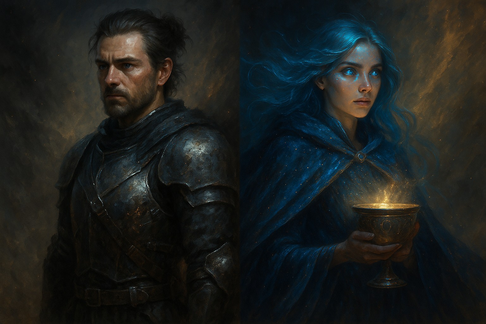

Хранители
ДЖЕРЕМИ
Он — голос глубины.
Рассказчик не просто ведёт повествование — он собирает фрагменты мира, как археолог Души.
Он может говорить шепотом,
но каждое слово — как молния в тишине.
Джереми — тот, кто видит сквозь.
Сквозь иллюзии. Сквозь время. Сквозь пространство.
Он был там,
где границы мира рассыпались на пыль,
и остался стоять.
У него глаза цвета пепельного золота.
Он помнит то, что другие забыли ещё до рождения.
АНДЖЕЛИКА
Она — голос чувства.
Если Джереми — структура,
то она — дыхание живого пространства.
Она вплетает в ткань истории оттенки, вибрации, слёзы, музыку молчания.
Её голос может звучать в самом сердце —
как ласкающая мысль
или крик раненой планеты.
Иногда она молчит —
и в этом молчании звучит
вся Библиотека Вечности.
У неё глаза как переливчатый эфир,
а волосы — как шёлковая тень
от солнечного света.
Вернуться к карте